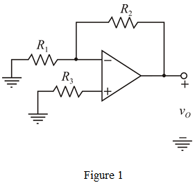
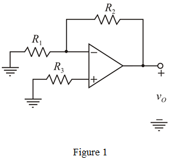
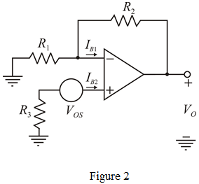

Closed-loop gain of an op-amp is .
The circuit diagram with bias-current-compensation resistor  is shown in Figure 1.
is shown in Figure 1.

Closed-loop gain of an op-amp is .
The circuit diagram with bias-current-compensation resistor is shown in Figure 1.

Assume, and 
Calculate the value of resistor,  .
.
Therefore, the value of resistor,  is
is  .
.
With input grounded, output offset voltage is .
Consider the following circuit model.

Current flowing through inverting terminal is  and through non-inverting terminal is
and through non-inverting terminal is  .
.
Here input offset current is,
……. (1)
Apply Kirchhoff’s voltage law at the non-inverting terminal.
It is knows that,
Apply Kirchhoff’s voltage law at the inverting terminal.

Substitute for in the equation.
Therefore, the range of offset current is .